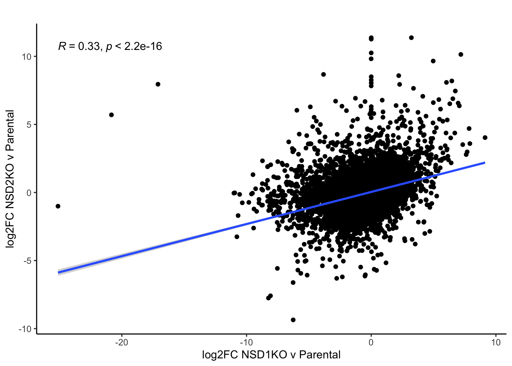

Cal27 ssGSEA
Detroit ssGSEA
NSD1KO v NSD2KO: same # of reps
Analysis of overlapping genes between NSD1KO v parental & NSD2KO v parental. 2 reps per condition, including the parental (old and new batch parentals combined).
All genes
When looking at all genes, we observe low correlation in gene expression changes.

Upregulated DEGs
For upregulated DEGs, we do not observe many overlapping genes (40), but in those genes, there is a high correlation in gene expression changes.
Euler
Scatterplot
List of genes
Downregulated DEGs
There is even fewer overlapping downregulated DEGs between the two conditions as well as a lower correlation in gene expression changes.
Euler
Scatterplot
List of genes
Comparion of log2FC
Question: which condition (NSD1KO or NSD2KO) results in greater gene expression changes?
- Performed shrinking of the log2 fold changes to account for low counts & high dispersion values
- Took all the overlapping genes between the two conditions
- Split each condition into their respective upregulated and downregulated genes. Performed t.test
- For both upregulated and downregulated genes, we find overall greater gene expression changes in NSD1KO than in NSD2KO.

NSD1KO.NSD2OE
One replicate for each of the condition compared to parental.
Much lower gene expression changes in NSD1KO.NSD2OE than in NSD1KO.
Comparison of log2FC
Scatterplot
Fairly weak correlation in gene expression changes between NSD1KO and NSD1KO.NSD2OE.